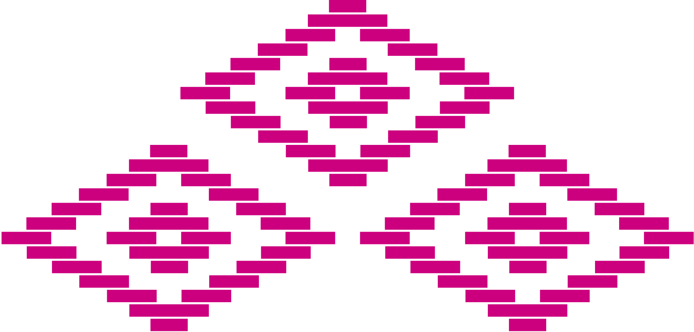

We partner with individual artists, private collectors and communities to meticulously document, organize, and archive their art.
From physical handling and cataloging to creating digital records, we build bespoke systems that give you clarity and control over what you own or create.
Our practice is built on a framework designed to shift power back to the creator, the collector, and the community.
We believe archives shouldn't just belong to massive data centers, old institutions or galleries.
We bring professional cataloging directly to your space, beyond institutional gatekeeping.
We enable artists, collectors and communities to own, control, and utilize their data.
No third-party dependencies--just your collection carefully mapped and in your hands.
Accession records and archives are inherently political; they shape how art and collections are understood.
We reject the idea of a fixed archive aligned with colonial and extractive standards.
We build agile systems that are responsive to changing cultural realities and fluid narratives.
We operate under a rigorous, transparent workflow designed to guarantee data integrity and physical safety for every object handled.
Cross-referencing objects against existing manifests to trace provenance.
Meticulous material examination, structural assessment, and scale mapping.
Stabilization and preservation measures -- executed only when structurally required.
Visual documentation including high-fidelity macro details and true-color states.
Deploying custom archival tagging and physical location tracking mechanics.
Encoding verified data and physical storage points into digital records.
Integrity checking to guarantee high data accuracy before permanent recording.